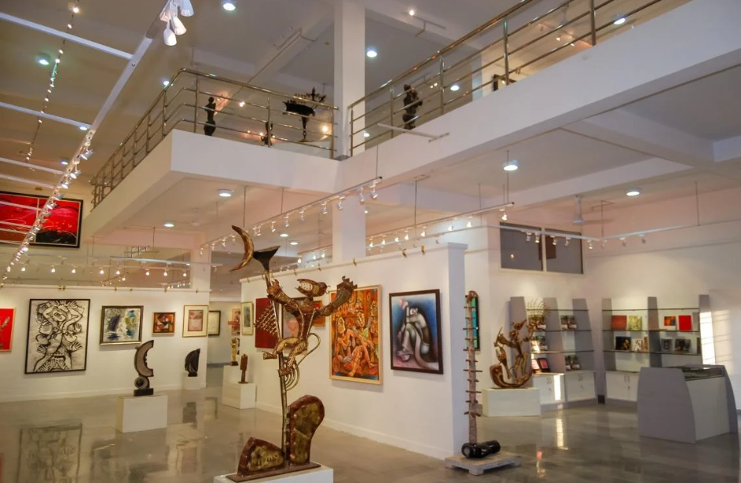

Cholamandal artist village

The Cholamandal Artists’ Village is an idyllic place located on 10 acres of land, about nine km from Adyar, Chennai – along the New Mahabalipuram road. Being India’s largest self-supporting artists’ village and one of the most successful in Asia, this beautiful village is truly a magnum opus of contemporary art. It is equipped with all that is needed for an arts village, esp. the open-air theatre Bharathi that is used for holding discussions and conferences. It has earned reputation world over and is now, one of the major tourist attractions in the Coastal city.
For more details contact : +91 5900065551